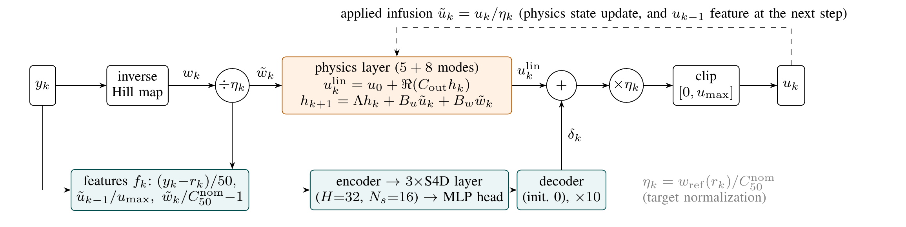
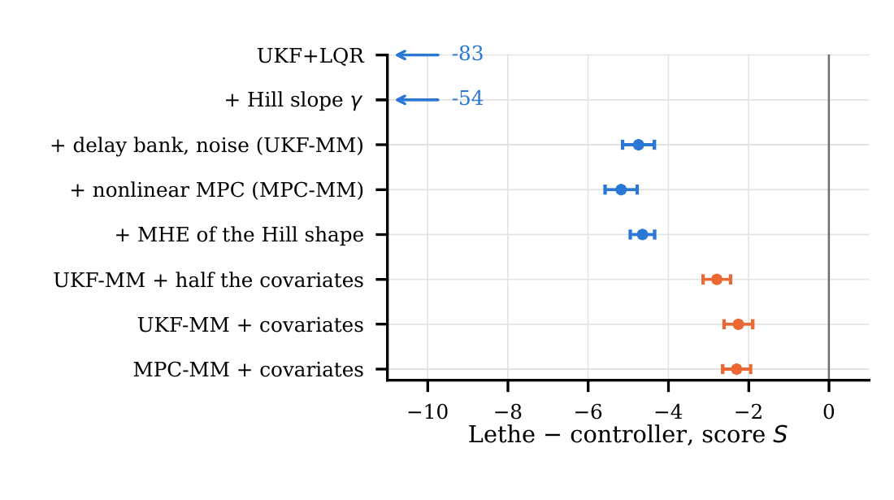
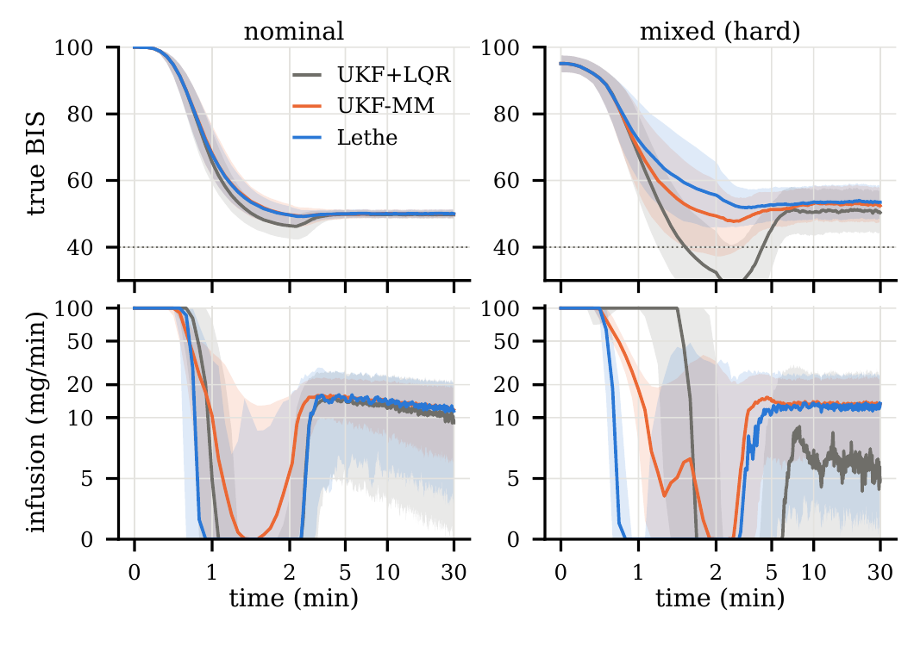

Abstract
Learned controllers for closed-loop anesthesia are often compared with model-based baselines that lack information the learned policy exploits implicitly, such as a model of the monitor delay. We ask where learning still adds value once that information is supplied. A recurrent policy is trained through a differentiable simulation of BIS-guided propofol infusion over a randomized patient population and compared on the same simulated patients with a ladder of model-based controllers given progressively more information, from a delay model and nonlinear MPC to the patient’s covariates. The learned policy has the lowest overall cost; its relative gain is largest in maintenance, where its tracking error is 19% lower than that of a delay-aware multiple-model unscented Kalman filter. The patient’s covariates remove about half of its advantage; the rest lies in tracking potency changes and combined model errors. An ablation shows that starting the policy from the classical Kalman-filter-plus-LQR design is not the source of the gain: a network trained without it does as well, if less reliably. Explicit delay models remain better under long monitor delays.
Where learning still helps
Each step up the ladder closes part of the gap. A delay model closes most of it; planning and estimating more of the model do not close more. Giving the baseline the patient’s covariates removes about half of what remains. Lethe keeps its advantage where no prior information helps: potency changing during the case, and several model errors at once.

Closed-loop behaviour
On hard patients, Lethe ends the induction bolus earlier and undershoots less. A baseline without a delay model overdoses.

Takeaways
- Compare fairly. A UKF with LQR and no delay model costs twice as much as Lethe, almost entirely because of the delay. Learned controllers should be judged against baselines given the same information.
- The physics prior buys reliability, not performance. A network trained without it ends up as good, but one in three seeds never learned to dose.
- It holds over long cases. Over 250-minute cases Lethe’s cost stays flat, and it beats the delay-aware UKF in ten of eleven scenarios.
- Limits. Explicit delay models are better under a long (60 s) monitor delay and under noise beyond the training range. All results are simulated.
Citation
@unpublished{venancio2027lethe,
title = {Lethe: A Physics-Initialized State-Space Policy for
Closed-Loop Propofol Anesthesia},
author = {Venancio, Ranan and Bento, Lu{\'i}s Conde and
Gon{\c{c}}alves, Lio and Mendon{\c{c}}a, Teresa},
note = {Submitted to the 2027 European Control Conference (ECC)},
year = {2026}
}